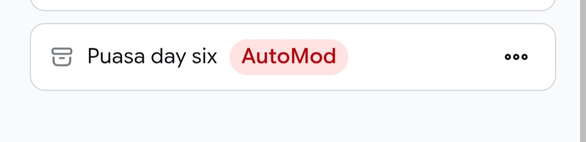

Haloo, heheheh.
Sehatusnya ini sudah banyak tulisan, dikarenakan banyak hal yg terjadi, jadi stuck gini deh. sebenarnya sudah ada tulisan dan emang sudah memulis di platfrom baru ini, tapi ada hal yg tidak di inginkan terjadi.
Tiba-tiba tulisanku itu terhapus oleh AI, jadi saya badmood wkwk.
Udah nulis eh malah dihapus, mana ga ada keterangan sama sekali kenapa bisa dibapus.
Jadi saya memutuskan buat pindah aja dari platfrom itu, huft padahal udah enak seharusnya tapi ada semacam itu jadi kaya sia-sia kalo kita nuslis tapi ujung-ujungnya dihapus.

Cuma seperti itu keterangannya, ga jelas.
Jadi saya memutuskan balik ke hugo biar bisa leluasa, seenaknya dan tentu saja biar ga dihapus AI.